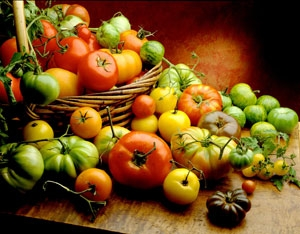

When you shop for vegetable seeds for your garden, there are two main types to choose from: modern hybrids or heirloom vegetable varieties. Hybrid seeds are created by crossing two selected varieties, sometimes resulting in vigorous plants that yield more than heirlooms. Heirloom vegetables are old-time varieties, open-pollinated instead of hybrid, and saved and handed down through multiple generations of families. Usually, they cost less than hybrid seeds. But there are more reasons than just seed prices to choose heirlooms.
1. Exceptional taste is the No. 1 reason many gardeners cite for choosing heirloom varieties.
Crinkly-crisp cone-head cabbages from Sicily, nutty Native American squash, your grandma’s voluptuous deep red canning tomatoes - they all immediately invoke flavorful images for those who knew them in childhood and others who have discovered them.
“A lot of the breeding programs for modern hybrids have sacrificed taste and nutrition,” says George DeVault, executive director of Seed Savers Exchange, the leading nonprofit organization dedicated to saving and sharing heirloom and other rare seeds. “The standard Florida tomato is a good example. Instead of old-time juicy tangy tomatoes, it tastes like cardboard. It was bred to be picked green and gas-ripened because that’s what was needed for commercial growing and shipping.”
Many heirloom vegetables have been saved for decades and even centuries because they are the best performers in home and market gardens. Ship-ability wasn’t a concern so flavor could take a front seat, and it did. What direct-to-market farmer would survive if his cucumbers didn’t taste as good as his neighbor’s? Backyard gardeners rarely cart their produce cross-town much less cross-country. Even today, small market farmers don’t usually transport their harvest in huge tractor trailers. There’s no need to plant veggies bred to be tough when you can plant heirloom vegetables that are tender, sweet, juicy and just plain delicious.
2. Heirloom vegetables are likely to be more nutritious than newer varieties.
In addition to ship-ability, breeders and commercial growers have been steadily pushing for higher and higher yields. “But for home gardeners, a little difference in yield isn’t a big deal,” DeVault says. And even though hybrids may often outyield heirlooms, it turns out we’re now paying a hidden cost for this emphasis on higher yields. Recent research has revealed that in many cases, newer vegetables and grains are significantly less nutritious than heirlooms. (For more details, see Industrial Farming is Giving Us Less Nutritious Food.)
3. Many gardeners prefer heirloom vegetables because they are open-pollinated, which means you can save your own seed to replant from year to year.
“Seeds saved from heirloom vegetables will produce plants that are true to type, unlike hybrid seeds. If you try to save seed from hybrids, you usually won’t get good results,” says Andrew Kaiser, manager at Baker Creek Heirloom Seeds.
Also, with heirloom vegetables you can choose what works best in your garden. If you save seeds from heirloom vegetables over several years, you can gradually select seeds from the plants that perform best in your local soil and climate. This will give you a seed strain that is more resistant to local pests and diseases. Plants are much more adaptable than most of us realize.
“Take a nice, old variety that has a lot of redeeming qualities, and select what performs well in your garden,” DeVault says. “Save those seeds, and you can create your own locally adapted variety.”
Locally-adapted heirlooms also fly in the face of one of the major criticisms vintage veggies endure. Are they really less resistant to pests and diseases? Again, there is a discrepancy between what works commercially and what works on a home or small scale. One hundred and fifty acres of French heirloom melons growing in Texas might be devastated by an infestation or illness, but when you’re talking about small, diverse gardens and heirloom seeds that have been selected to grow well in that region, heirlooms may actually be a better choice. “Varieties that are localized tend to survive attacks by pests and disease quite well,” Kaiser says. When you select and save seeds from the most successful heirloom vegetables from your garden, the more reliable those vegetables will become year after year. Not only do you get a better, locally adapted strain of a variety when you save you own seed; you also save money because you don’t have to purchase new seeds every year, as is the case with hybrids.
4. The fourth advantage of heirloom vegetables is that they are “less uniform” than hybrids, which means they often don’t ripen all at once.
Commercial growers love the uniformity of hybrids because they can pick the crop in one fell swoop. But for home gardeners, a gradual supply of fresh produce is usually preferable to the glut of the all-at-once harvest that many hybrids provide.
5. In catalogs and on seed racks, heirloom open-pollinated vegetables are almost always less expensive than hybrids.
On top of that, if you save your own seeds, the price drops to zero for the heirlooms. (For more on which varieties are the easiest to save, see Grow Your Own Seeds.)
6. Many heirlooms have wonderful stories of how they came to America.
In many cases, these heirloom vegetables have been grown for many centuries all around the world. What a great feeling - to be connected through tiny, magical seeds to so many other gardeners from so long ago!
To learn more about the history of heirloom vegetables and how to grow and cook with them, we highly recommend Heirloom Vegetable Gardening: A Master Gardener’s Guide to Planting, Seed Saving and Cultural History by Mother Earth News contributing editor William Woys Weaver, which is now available on CD. And for heirloom vegetable mail-order seed catalogs with huge selections and glorious photos, top choices include the free catalogs from Seed Savers Exchange and Baker Creek Heirloom Seeds.
Creating an heirloom that is perfectly suited for your particular garden can take years of seed saving and planting out. If you want immediate gratification, you can do a little legwork before selecting the variety of heirlooms you want to use. Ask around. Are there farmers at the local market who always have heirloom tomatoes or other gorgeous and unusual products? Talk to them about the varieties and what their experiences have been over the last few growing seasons. Dig into your family or community tree to see if any of your elders can recall names of varieties that grew well in the region or were particularly memorable. You may stumble across a gardener still growing a family heirloom.
“A particular variety can stay in a family for many generations and have quite a history,” Kaiser says. “They can be passed down just like other heirlooms - like a grandfather clock.”
|
 ANDREW UNANGST/FOTOLIA Once you’ve had the juice of a perfectly ripe, just-picked, sun-warmed heirloom tomato running down your chin, we’ll bet a million bucks you’ll never enjoy a bland, mealy, grocery store “tomato” ever again! |
|
|